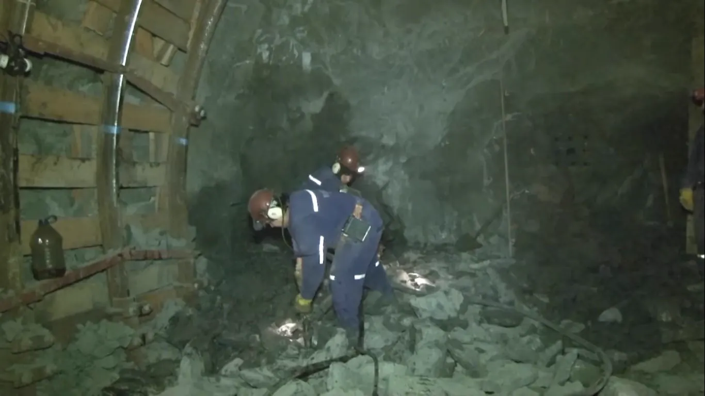

¿Cómo funciona el carbón como fuente de energía?
El carbón mineral es roca formada por materia vegetal fosilizada: turba → lignito → carbón subbituminoso → antracita. Alcanzó ese estado después de millones de años de presión y temperatura. Es no renovable y el que más CO₂ libera por kWh. Paso a paso:
En minas subterráneas (como Río Turbio) o a cielo abierto. En Argentina el carbón llega desde la mina santacruceña en tren.
El carbón se pulveriza para que la combustión sea completa y rápida en la caldera de la central.
El carbón encendido calienta agua hasta convertirla en vapor a alta presión, liberando CO₂, cenizas y otros contaminantes.
El vapor a presión golpea las palas de la turbina conectada al generador: el ciclo clásico de todas las centrales térmicas.
El generador produce electricidad, se transforma y viaja por las líneas. El vapor usado se enfría y vuelve al ciclo.
Ubicación en Argentina
En Argentina el carbón tiene un solo gran yacimiento: Río Turbio, en el sudoeste de Santa Cruz, junto a la frontera con Chile. Desde ahí, el carbón viaja por un tren de montaña hasta la central térmica San Nicolás, en Buenos Aires, que lo quema junto con otros combustibles.

La mina subterránea más austral del mundo en operación, con carbón subbituminoso de baja ley.
Una línea ferroviaria de más de 280 km une la mina con el puerto de Río Gallegos para exportar y abastecer.
En Buenos Aires, es la central que históricamente quemó carbón argentino en su ciclo de vapor.
Río Turbio se explota desde los años '40 y fue el símbolo de la energía del carbón argentino.
Potencia generada y rol en la matriz
Hoy el carbón aporta un valor marginal a la matriz argentina: apenas un 1-2% de la electricidad, y en caída constante. La potencia instalada a carbón es pequeña y envejecida.
A nivel mundial, en cambio, el carbón sigue siendo el mayor emisor de CO₂ de la generación eléctrica: China, India y otros países aún dependen de él. Argentina tomó el camino contrario: su carbón es una reserva estratégica casi sin uso, mientras la matriz se limpia con gas, renovables y nuclear.
El carbón es el peor enemigo climático por kWh: 740–920 g CO₂. Quemar carbón para un solo kWh emite más CO₂ que 200 kWh de nuclear o 100 kWh de eólica. Por eso en casi todo el mundo el carbón está en retirada.
Ventajas y desventajas
- ✦ Abundante y barato en el mundo (no en Argentina).
- ✦ Fácil de almacenar: no requiere tanques ni gasoductos.
- ✦ Tecnología madura y operación simple.
- ✦ Genera empleo en la cuenca minera (Río Turbio).
- ✦ Máximo emisor de CO₂ de todas las fuentes.
- ✦ Contaminación severa: cenizas, azufre, partículas, lluvia ácida.
- ✦ No renovable y minería de alto impacto.
- ✦ En Argentina, caro y escaso (depende de importación o de Río Turbio).
Para comparar el carbón con las fuentes limpias que lo reemplazan —nuclear, eólica, hidro— volvé al mapa de todas las fuentes.
Modelo 3D interactivo
El modelo 3D educativo para esta fuente está en desarrollo. Mientras tanto, podés explorar los modelos interactivos ya disponibles en hidroeléctrica, eólica, solar y nuclear.
Cuando esté disponible, vas a poder recorrer una central termoeléctrica a carbón en 3D: la tolva y los molinos, la caldera, el precipitador electrostático, la turbina de vapor y la chimenea, observando la cadena desde el mineral hasta la red eléctrica.
Modelo 3D en desarrollo
Próximamente vamos a sumar un modelo 3D interactivo para esta fuente, siguiendo el mismo estilo que ya usamos en hidroeléctrica, eólica, solar y nuclear.
Conceptos Clave
- ✦ El carbón es materia vegetal fosilizada no renovable: \(\text{C}+\text{O}_2\rightarrow\text{CO}_2\).
- ✦ Ubicación en Argentina: Río Turbio (Santa Cruz), consumido por la central San Nicolás.
- ✦ Es el fósil más contaminante: 740–920 g CO₂/kWh; aporte marginal en la matriz argentina.
- ✦ Ventaja: barato y almacenable. Límite: emisor máximo y con minería de alto impacto.